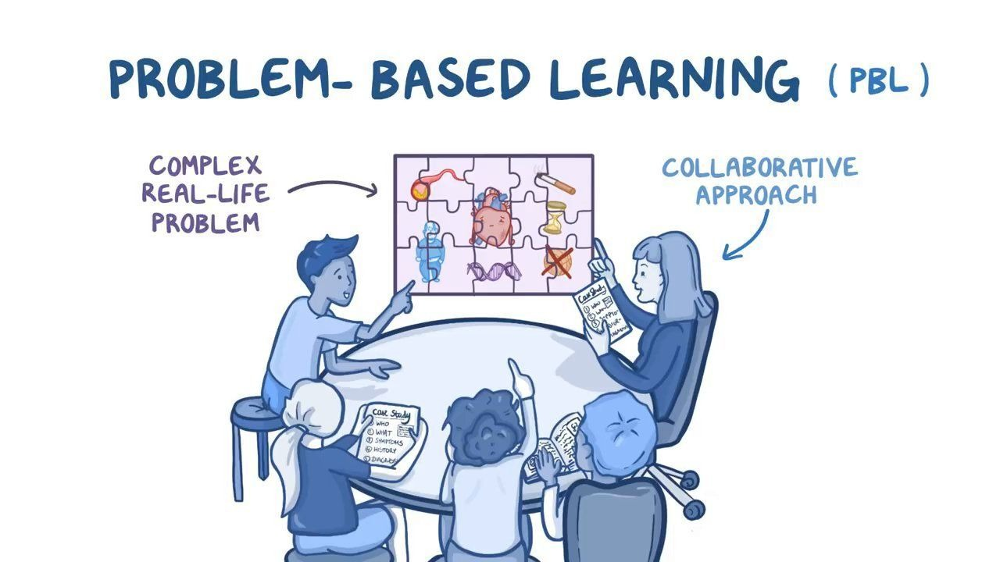

Recommended teaching strategy name :

INTRODUCTION
Problem-Based Learning (PBL) is an active teaching strategy that engages students in solving real-world problems. By working through complex issues, students develop critical thinking skills, gain practical knowledge, and learn to collaborate effectively.
An example of problem-based learning activity:
- A city is facing traffic congestion. Students must work in groups to propose a solution, considering factors like infrastructure, budget, and environmental impact.

DETAILED DESCRIPTION
What is Problem-Based Learning?
Problem-Based Learning (PBL) is an instructional method where students learn by actively engaging in solving a complex, real-world problem. Instead of simply receiving information from a teacher, students are presented with a problem and work collaboratively to find solutions. This approach fosters critical thinking, research skills, and the ability to apply knowledge in practical situations.
A Look at Problem-Based Learning:
- Definition: A student-centered approach where learners work together to solve a complex problem.
- Purpose: To develop problem-solving skills, critical thinking, and teamwork while encouraging independent learning.
- Forms: Group projects, case studies, simulations, and real-world scenarios.
- Examples in Education:
- Students create a marketing plan for a new product based on market research.
- In science class, students design an experiment to test environmental factors affecting plant growth.
- A history class solves a historical mystery by analyzing primary sources and evidence.
- Benefits:
- Promotes active learning and deeper understanding of the subject matter.
- Encourages collaboration and the development of teamwork and communication skills.
- Helps students connect classroom learning to real-world applications.
How Problem-Based Learning Can Be Implemented?
- Real-World Scenarios
- Present students with a current event or community problem to solve.
- Students research and propose a sustainable solution for reducing plastic waste in their local area.
- Students apply their knowledge to real-world challenges and develop practical problem-solving skills.
- Collaborative Group Work
- Organize students into small groups to solve a complex problem together.
- In a business class, groups create a business plan for a startup, considering market trends, financial projections, and product development.
- Encourages teamwork, division of tasks, and learning from peers.
- Case Studies
- Use case studies that involve solving specific issues in areas like healthcare, engineering, or technology.
- In an engineering course, students solve a design flaw in an existing product or create a new prototype.
- Develops analytical thinking and decision-making by examining and solving real-world cases.
- Simulations and Role-Playing
- Engage students in role-playing or simulation exercises where they must address complex issues from various perspectives.
- In a social studies class, students role-play as government officials to debate and resolve a policy issue.
- Builds empathy, critical thinking, and decision-making skills while fostering understanding of different perspectives.
EXAMPLE OF TEACHING VIDEO